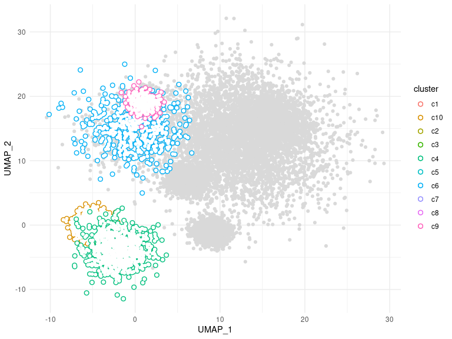
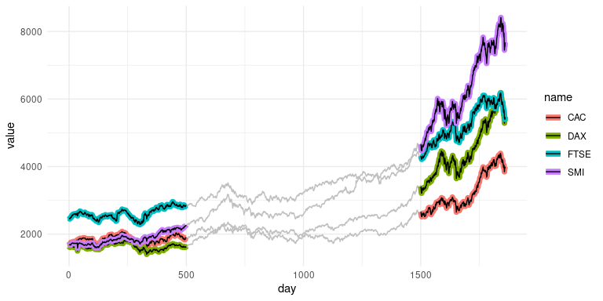

ggtrace provides ggplot2 geoms that allow groups of data points to be outlined or highlighted for emphasis. This is particularly useful when working with dense datasets that are prone to overplotting.
Installation
You can install the released version from CRAN:
install.packages("ggtrace")and the development version from GitHub:
devtools::install_github("rnabioco/ggtrace")Basic Usage
geom_point_trace() accepts graphical parameters normally passed to ggplot2::geom_point() to control the appearance of data points and outlines. The trace_position argument can be used to select specific sets of points to highlight. For more examples see the vignette.
library(ggplot2)
library(ggtrace)
ggplot(clusters, aes(UMAP_1, UMAP_2, color = cluster)) +
geom_point_trace(
trace_position = signal < 0,
fill = "white",
background_params = list(color = NA, fill = "grey85")
) +
theme_minimal()
geom_line_trace() accepts parameters normally passed to ggplot2::geom_line() with the following exceptions: fill controls the inner line color, color controls the outline color, and stroke controls outline width. Like geom_point_trace(), the trace_position argument can be used to select specific data points to highlight. For more examples see the vignette.
ggplot(stocks, aes(day, value, color = name)) +
geom_line_trace(
trace_position = day < 500 | day > 1500,
stroke = 1,
background_params = list(color = NA, fill = "grey75")
) +
theme_minimal()